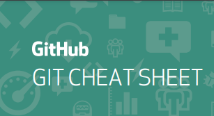

Ten a la mano un resumen de los comandos más usados
Los «Cheat Sheet» son una agrupación de notas sobre un tema en particular elaboradas para ser una rápida referencia de consulta, es como tener una «chuleta» o «copia» resumida de apuntes o trucos importantes.
Da click en 'Leer más' para obtener el git cheat sheet más actualizado para que siempre lo tengas a la mano.
Leer más Añadir a favoritos¿Hay un error y no sabes qué commit es el culpable?
El comando git bisect lo puedes usar para 'biseccionar' (partir por la mitad), es decir, con este comando podrás ir diviendo toda la pila de commits en dos partes, una parte de la pila contendrá el error y otra parte no. Vas a ir cambiando entre el historial de commits mientras indicas cuál contiene el error y cuál no, hasta que al final, encontrarás al culpable.
Leer más Añadir a favoritosEscribe mejores commits
- Escríbelos en inglés
- Usa verbos en imperativo como add, change, fix.
- Evita usar puntos supensivos.
- Sé conciso.
Prioriza tus proyectos con GITHUB
Los tableros Kanban son muy populares a la hora de controlar un proyecto y un flujo de trabajo. GITHUB permite crear tableros para organizar el seguimiento de tu repositorio, allí puedes apuntar y organizar las prioridades del proyecto, añadir notas, revisar problemas y filtrar por materias.
Leer más Añadir a favoritosUsa Alias en Git para ahorrar tiempo
Si no quieres escribir el texto entero de cada uno de los comandos de Git, puedes establecer fácilmente un alias para cada comando usando git config. Por ejemplo:
- $ git config --global alias.ci commit
Y luego para hacer un commit sólo escribirías:
- $ git ci